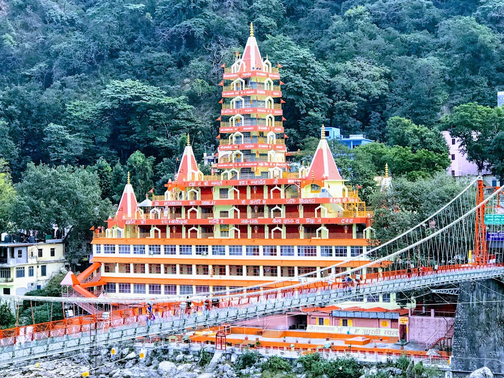
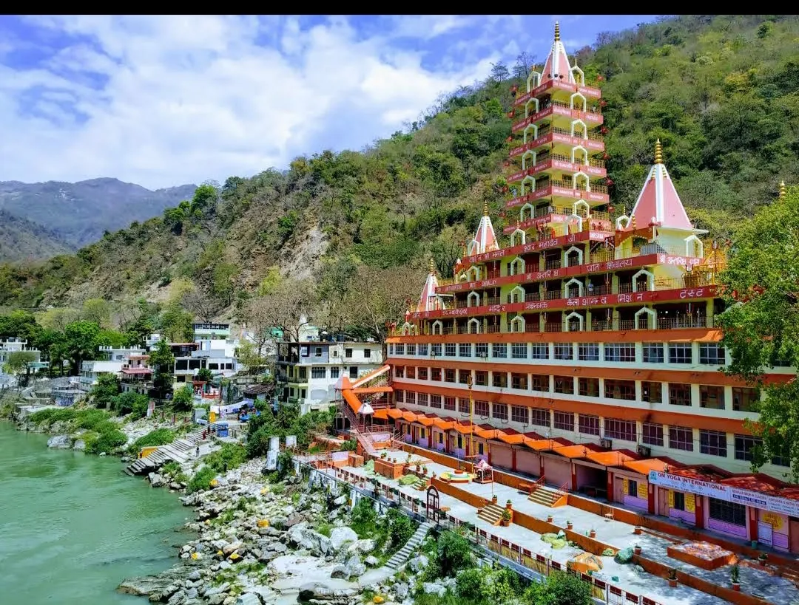
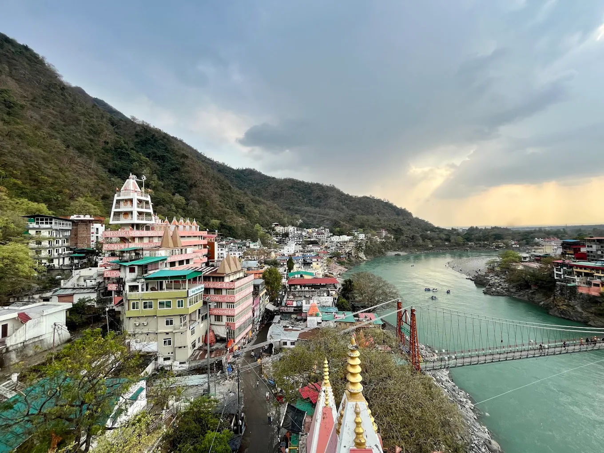
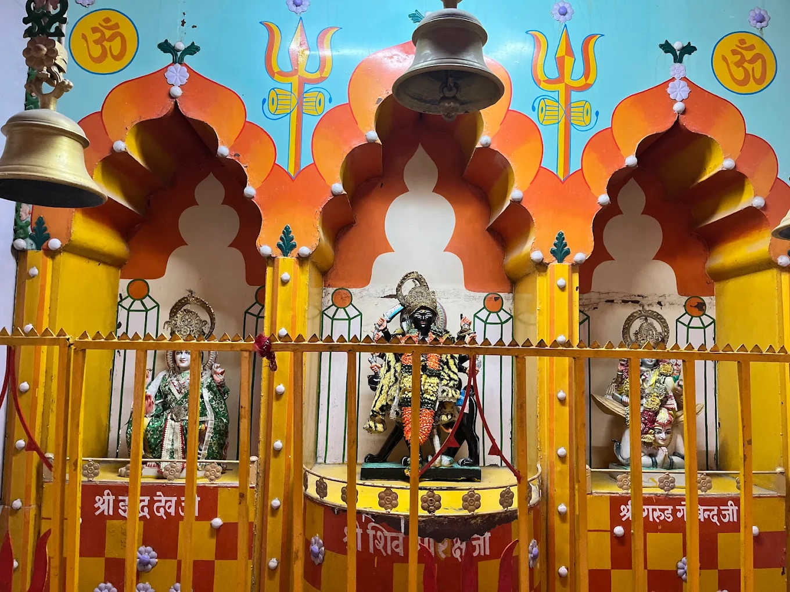
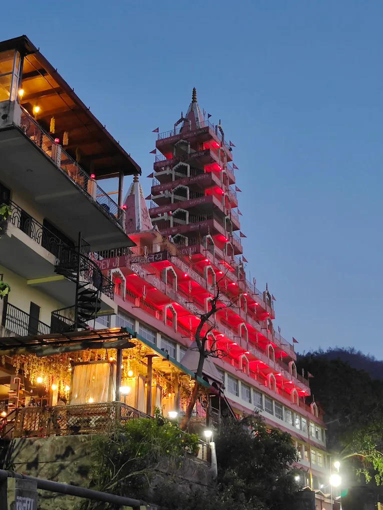

Trayambakeshwar Mahadev Temple (also called Trayambakeshwar or Trimbakeshwar Temple) is one of the oldest and most revered Shiva temples in Rishikesh, situated on the banks of the holy Ganga near Lakshman Jhula. Dedicated to Lord Shiva in his Trinetra (three-eyed) form, the temple is believed to date back hundreds of years and carries deep spiritual significance. The serene location, with the river flowing gently beside it and the Himalayan hills in the background, makes it a place of profound peace and divine energy.
The temple's simple yet powerful architecture, ancient Shivling, and constant chants of "Om Namah Shivaya" create an atmosphere of deep devotion. Devotees come here for blessings, especially during Sawan, Maha Shivratri, and daily evening aarti. The proximity to Ram Jhula and other spiritual spots makes it easy to combine darshan with a walk across the iconic bridges or Ganga Aarti. Trayambakeshwar is a hidden gem for those seeking quiet communion with Lord Shiva in the heart of Rishikesh’s spiritual landscape.
Early morning for peaceful darshan and Ganga views, or evening for aarti — especially beautiful during Sawan (July–August) and Maha Shivratri.
Ancient Shivling, riverside location, daily aarti, peaceful spiritual ambiance, close to Ram Jhula and Lakshman Jhula, and strong Shiva energy.
Offer bilva leaves, milk, and water to Shivling, wear modest clothes, attend evening aarti, combine with a walk across Ram Jhula, and maintain silence inside the temple.
"Trayambakeshwar Mahadev Temple is where the eternal gaze of the three-eyed Lord Shiva meets the flowing Ganga — a quiet sanctuary of power, peace, and timeless devotion in the lap of Rishikesh."